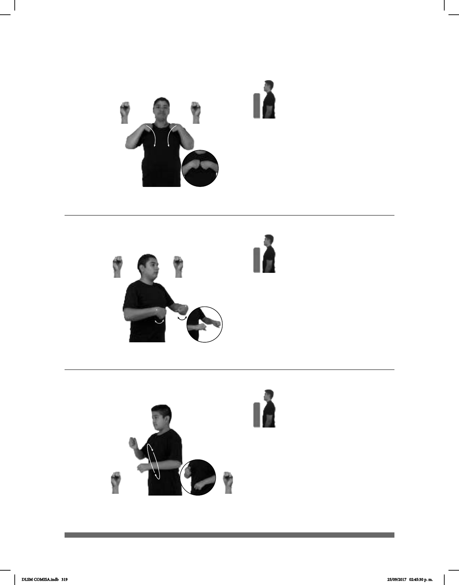

319
Seña: SS
S.1
Palmas hacia dentro.
De los hombros al centro
del pecho.
Recto.
Simula la acción de
acomodarse una mochila.
sust. f. Bolsa de
cuero, plástico, tela, etc. que usan los
escolares para llevar sus libros,
cuadernos, etcétera.
Seña: SS
S.1
Palmas hacia abajo.
A la altura del pecho.
Las manos se mueven de
muñecas.
Labios soplando
con vibración.
Simula la acción de
acelerar en una motocicleta.
sust. f. Vehículo de dos rue-
das motorizado.
(S-76)
(S-77)
CUADERNO DIFERENTES++ CL:5
meter
ADENTRO pos-TU MOCHILA
Mete los cuadernos dentro de la mochila.
MOTOCICLETA pro-ÉL VIAJAR CUERNAVACA A
distancia lugar
PACHUCA
Él viaja de Cuernavaca a Pachuca en motocicleta.
(S-78)
Seña: SB
MD y MB S.1
MD oblicua hacia la
izquierda. MB oblicua hacia la derecha.
MD a la altura del pecho.
MB a la altura de la cintura.
Los brazos siguen una
trayectoria de movimientos circulares
hacia el frente.
Simula la acción de
remar.
Estación perteneciente a la
línea 2 del Metro.
pro-YO ESPERAR-a-tiRELOJ METRO NATIVITAS
allí
NOS-VEMOS
Te espero en el reloj del metro Nativitas, allí nos vemos.
DLSM COMISA.indb 319 25/09/2017 02:45:30 p. m.